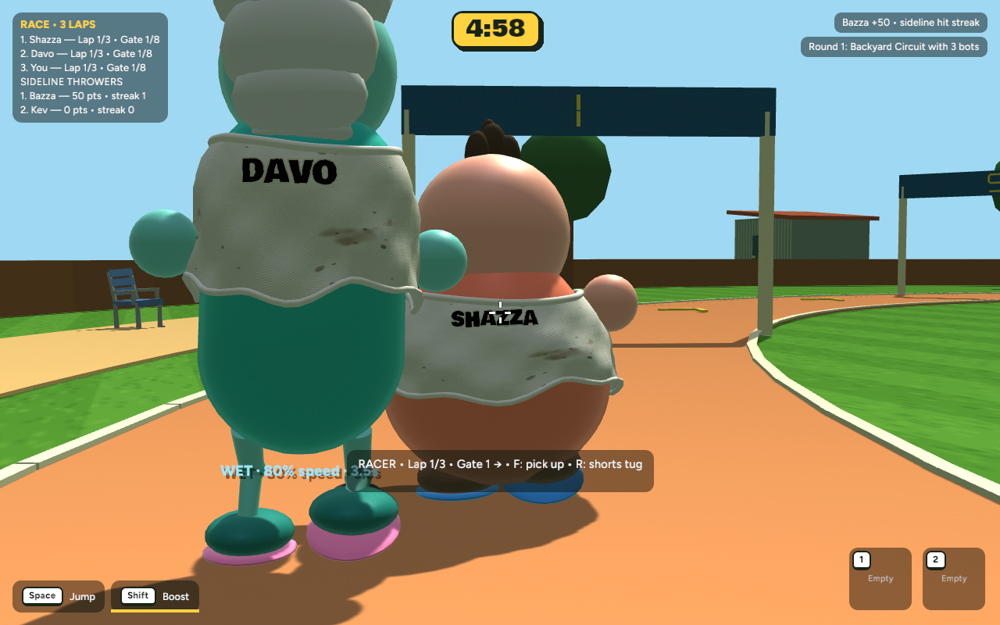
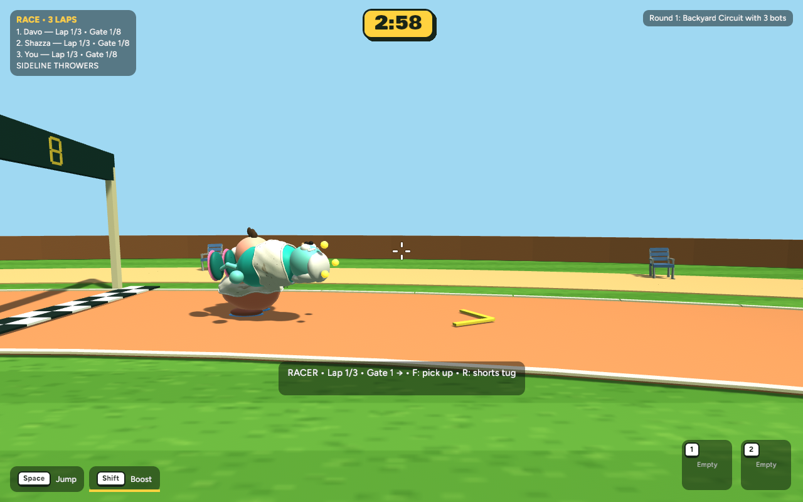
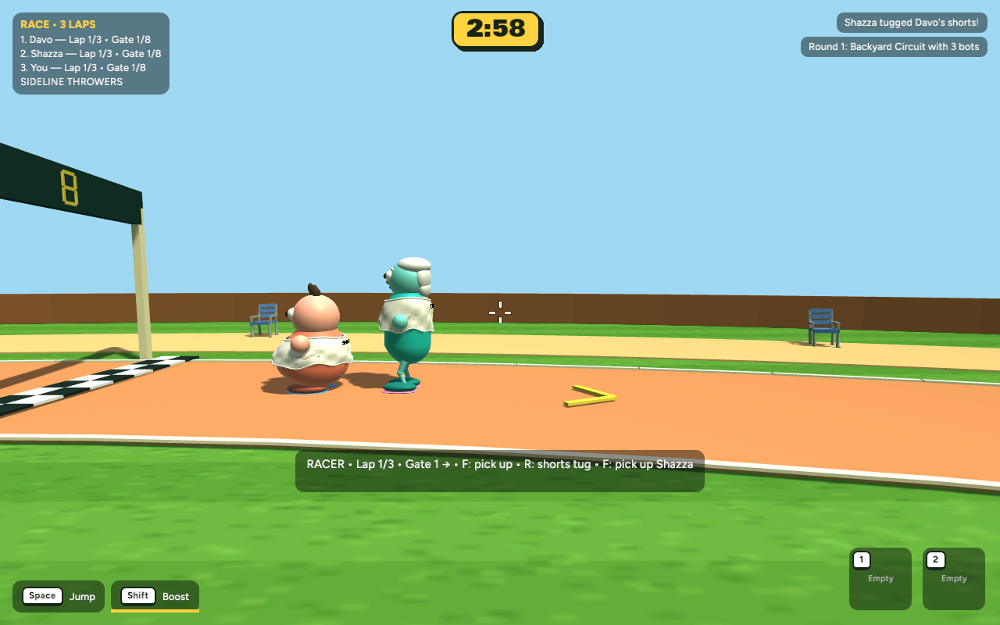
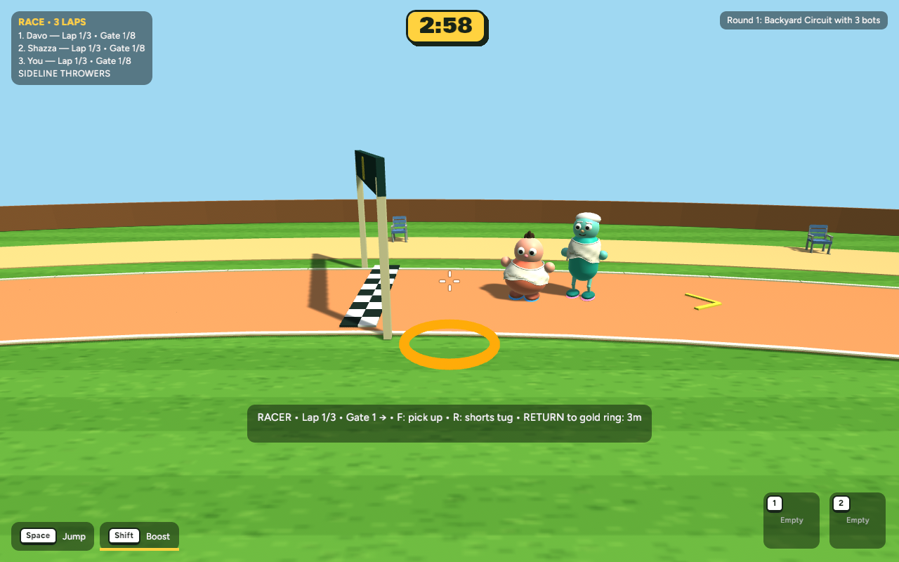
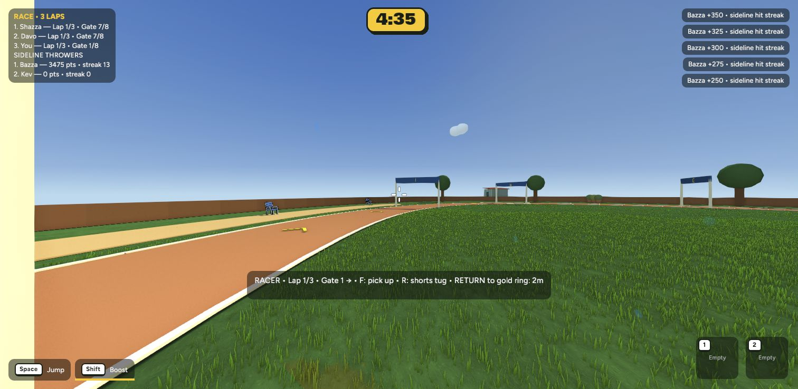
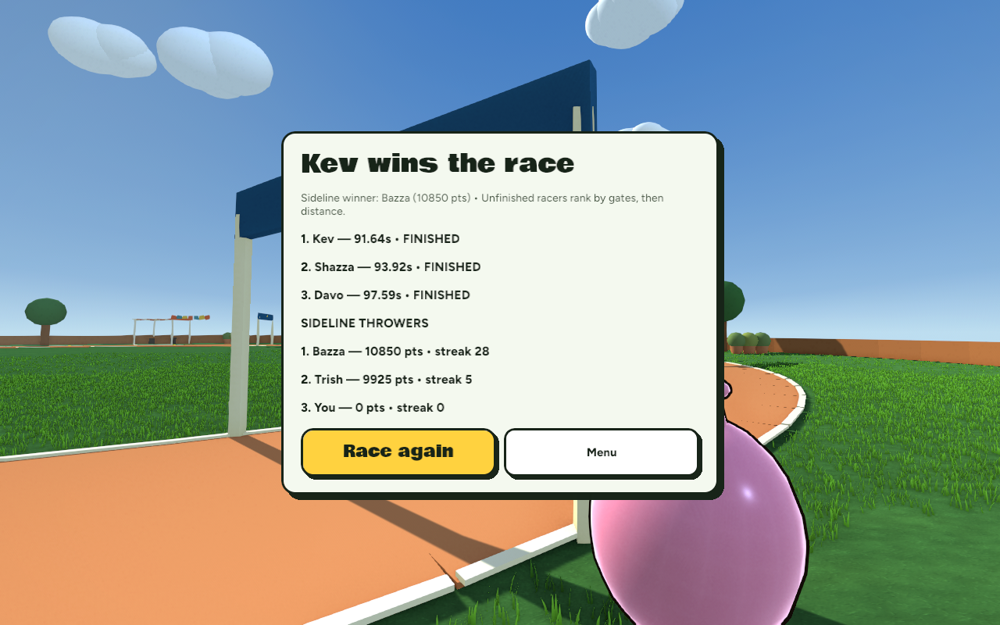
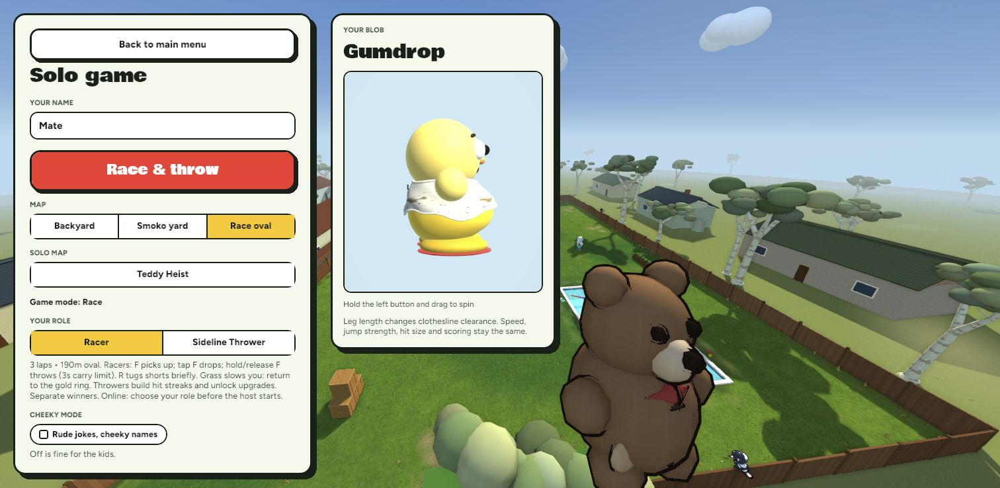

Australian BBQ · 24 October 2026 · ready for review
Shirt names.
Race mischief.
Names on existing shirt backs across every mode. Race gets carrying and throws, a brief shorts tug, a clear route back from the grass, and a few new backyard landmarks.
All images below are actual implemented game captures. Nothing committed or pushed. Your previous version and pending menu work are preserved in a verified backup.

Rear shirt names in Race: bold lettering with a contrasting outline.Try the new interactions
Pick up, carry, throw

F picks up a nearby eligible racer. Tap F to drop, or hold F for at least 0.25 seconds then release to throw. Maximum carry: 3 seconds; re-grab protection: 5 seconds.
A quick shorts tug

R at close range gives a small clothed waistband reaction and 65% pace for 1.25 seconds. Clothing stays on. Cooldowns prevent repeated slowing; no points are awarded.
Grass slows you down

Off-course grass gives 55% pace. Follow the gold ring back to where you left the course before checkpoints resume. Carrying or throwing cannot skip gates.

Actual browser gameplay: the return prompt and ring show how to rejoin.A little more life around the oval
Striped spectator shelters, bunting, plant clusters and a shed create landmarks while keeping the racing lane and throwing sightlines clear.
Names in other modes
Verified in the running game

All three racer bots finished three laps; sideline standings remain separate.
Race setup and role selection, with the new controls explained.664 tests passed. Native and browser release builds passed. Local host/guest checks covered tug, pickup, release and replicated recovery state. Both players need the rebuilt version (protocol 15).
| Matched scene | Before mean frame time | After |
|---|
| Race | 6.919 ms | 6.933 ms |
| Backyard | 8.452 ms | 8.321 ms |
600 wall-clock frame intervals at 1280×800 after warmup, same camera. No meaningful regression observed. Not GPU timestamp measurements or an internet multiplayer soak test. Initial balance still needs your playtest.
Test this version
cd /Users/marcus/Claude/australian-bbq/rust
~/.cargo/bin/cargo run -p bbq_app --release -- --menu
Choose Solo → Race oval → Racer to try F and R. Choose Sideline Thrower to check the existing throwing game.
Checkpoint, limitations and recovery · Testing guide · Changed files